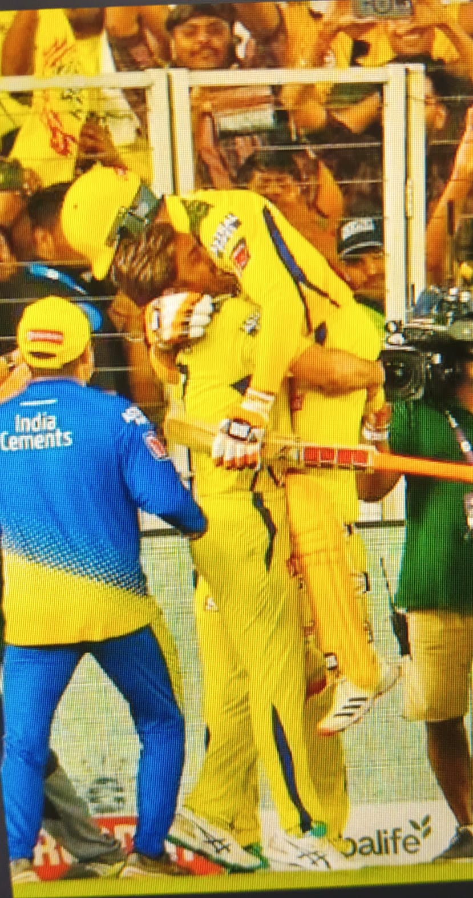
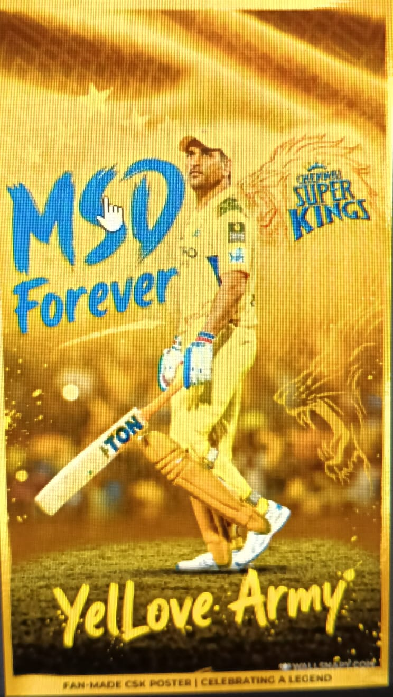

Introduction
Chennai Super Kings (CSK) is a professional cricket team based in Chennai, Tamil Nadu, established in
2008 to compete in the Indian Premier League (IPL). Led by the legendary MS Dhoni for many seasons,
CSK is known for its consistency, passionate fan base, and strong team spirit. With five IPL titles,
CSK has become one of the most beloved franchises.
Official CSK Website


History of CSK
CSK is one of the original IPL team since 2008.It's popularity
grew under MS Dhoni's leadership, combining consistent performances,
loyal fans,and exciting players and making a remarkable comeback in
2018 cemented CSK's place in Indian cricket forever.
Jump to Achievements
CSK Title Winning Years
| Year | Status |
|---|---|
| 2010 | Champions |
| 2011 | Champions |
| 2018 | Champions |
| 2021 | Champions |
| 2023 | Champions |
Achievements
- 5 time Champions(2010,2011,2018,2021,2023) joint most by an IPL Team.
- One of most consistent IPL Teams with 12 times Playoffs qualifications
- 10 IPL Final Appearances most among all IPL Teams.
- 2 Champions League t20 Titles(2010 and 2014).
- One of the greatest comeback in 2018.
Famous Players
-
MS Dhoni
He was the captain of CSK.He is famous for his leadership,tactics and strategies.
-
Shane Watson
He was one of key players for CSK form 2018 to 2020.He is mostly recognised
because of his famous 2019 final innings where he was batting despite his knee bleeding. -
Suresh Raina
He is known as Mr IPL.He served CSK from 2008 to 2021.
He has done a lot of brilliant innings and fielding for CSK .
But his most remarkable feat was the innings in 2014 Qualifier 2
where he scored 87 off just 25 that also in only powerplay this
record is unmatched till today also.
Why Fans Love CSK
Fans love CSK for MS Dhoni's legendary leadership, consistent performances, and strong team spirit.
The loyalty of players like Suresh Raina and Ravindra Jadeja creates a special bond with supporters.
Five IPL titles, the 2018 comeback, the yellow jersey, and the famous "Whistle Podu" anthem make
CSK an emotion for millions.
Go to Footer
Conclusion
Chennai Super Kings is more than just a cricket team; it is an emotion for millions of fans. With five
IPL titles, legendary players, MS Dhoni's leadership, and a loyal fan base, CSK has created a
remarkable legacy in Indian cricket.